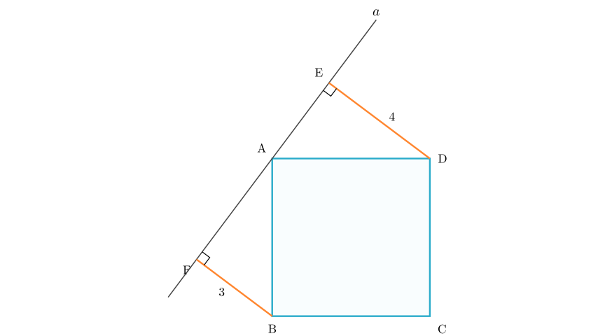
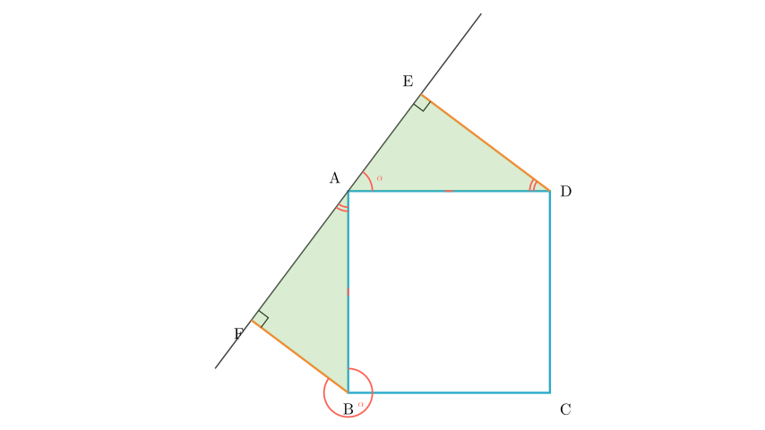
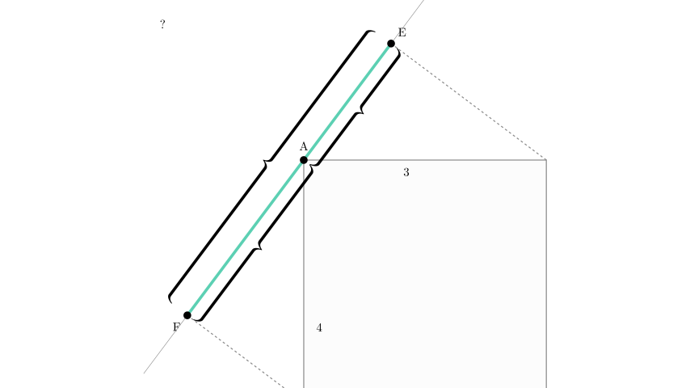

Problem Statement: As shown in the figure, line $a$ passes through vertex $A$ of square $ABCD$. Perpendiculars $DE$ and $BF$ are drawn from vertices $D$ and $B$ to line $a$, intersecting it at points $E$ and $F$ respectively. If $DE = 4$ and $BF = 3$, what is the length of $EF$?
Options: A. 1 B. 5 C. 7 D. 12
Solution Approach: We will use the properties of the square and the geometry of right-angled triangles. By analyzing the angles around vertex $A$, we will prove that triangle $ABF$ is congruent to triangle $DAE$. This congruence will allow us to relate the unknown lengths of segments on the line $EF$ to the given lengths $DE$ and $BF$.

Step 1: Analyze the Angles
First, let's examine the relationship between the two right-angled triangles, $\triangle ABF$ and $\triangle DAE$.
Now, look at triangle $\triangle ABF$. Since it is a right-angled triangle (because $BF \perp a$): $$ \angle F AB + \angle ABF = 90^\circ $$
Comparing the two equations: - $\angle DAE = 90^\circ - \angle F AB$ - $\angle ABF = 90^\circ - \angle F AB$
Conclusion: $\angle DAE = \angle ABF$.

Step 2: Prove Congruence
We now have three conditions to prove that $\triangle ABF$ and $\triangle DAE$ are congruent: 1. Angle: $\angle AFB = \angle DEA = 90^\circ$ (Given perpendiculars). 2. Angle: $\angle ABF = \angle DAE$ (Proved in Step 1). 3. Side: $AB = AD$ (Sides of the square).
By the AAS (Angle-Angle-Side) congruence criterion, we establish: $$ \triangle ABF \cong \triangle DAE $$
Step 3: Determine Lengths
Because the triangles are congruent, their corresponding sides are equal in length: - The side $AF$ in $\triangle ABF$ corresponds to the side $DE$ in $\triangle DAE$. $$ AF = DE = 4 $$ - The side $AE$ in $\triangle DAE$ corresponds to the side $BF$ in $\triangle ABF$. $$ AE = BF = 3 $$

Step 4: Calculate Final Length
The points $E$, $A$, and $F$ lie on the same straight line $a$, with $A$ between $E$ and $F$. Therefore, the total length of segment $EF$ is the sum of segments $EA$ and $AF$.
$$ EF = EA + AF $$
Substituting the values we found: $$ EF = 3 + 4 $$ $$ EF = 7 $$
Final Answer: The length of $EF$ is 7. This corresponds to Option C.
Recap: 1. We identified two right-angled triangles formed by the perpendiculars and the sides of the square. 2. We proved these triangles ($\triangle ABF$ and $\triangle DAE$) are congruent by "angle chasing" around the vertex $A$. 3. We mapped the known vertical/horizontal lengths ($BF=3, DE=4$) to the segments along the line ($AE=3, AF=4$). 4. We summed these segments to find the total length.